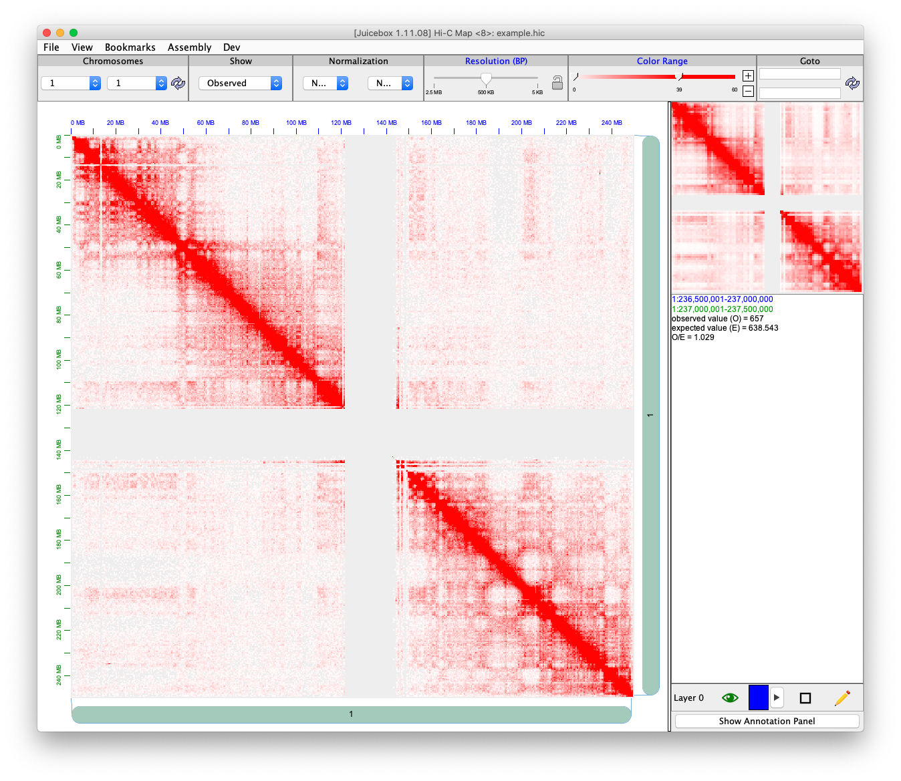

The .hic file is a highly compressed binary file, which is developed in the Aiden Lab. Which can be used in juicebox for contact matrix visualization.
The .hic file is formatted as HiC Format. To program with .hic file, they provide straw and Dump to extract the information from the .hic file. The FreeHiCLite::readJuicer() adopts most from the C++ version of straw.
The .hic file only contains two units of resolution, and each unit contains a fix set of resolutions.
The following figure shows how juicebox visualized a human genome at chromosome 1.

library(FreeHiCLite)
The ‘FreeHiCLite’ can access two type of hic file, one is local file, the other is remote file. The remote file lists can be found in http://aidenlab.org/data.html.
To access basic information about a .hic file. We can use function readJuicerInformation(). For example, we want to know which genomeID and what are the available resolutions of a remote file locates in: https://hicfiles.s3.amazonaws.com/hiseq/gm12878/in-situ/combined.hic. Besides, it will also extract the chromosomes sizes.
## Remote file location. The reomte file include downloading, it may take a while remoteFilePath = "https://hicfiles.s3.amazonaws.com/hiseq/gm12878/in-situ/combined.hic" remoteInfo <- readJuicerInformation(remoteFilePath, verbose = TRUE) #> File: https://hicfiles.s3.amazonaws.com/hiseq/gm12878/in-situ/combined.hic #> GenomId: #> Available pair: 10_10, 10_11, 10_12, 10_13, 10_14, 10_15, 10_16, 10_17, 10_18, 10_19, 10_20, 10_21, 10_22, 10_23, 10_24, 10_25, 11_11, 11_12, 11_13, 11_14, 11_15, 11_16, 11_17, 11_18, 11_19, 11_20, 11_21, 11_22, 11_23, 11_24, 11_25, 12_12, 12_13, 12_14, 12_15, 12_16, 12_17, 12_18, 12_19, 12_20, 12_21, 12_22, 12_23, 12_24, 12_25, 13_13, 13_14, 13_15, 13_16, 13_17, 13_18, 13_19, 13_20, 13_21, 13_22, 13_23, 13_24, 13_25, 14_14, 14_15, 14_16, 14_17, 14_18, 14_19, 14_20, 14_21, 14_22, 14_23, 14_24, 14_25, 15_15, 15_16, 15_17, 15_18, 15_19, 15_20, 15_21, 15_22, 15_23, 15_24, 15_25, 16_16, 16_17, 16_18, 16_19, 16_20, 16_21, 16_22, 16_23, 16_24, 16_25, 17_17, 17_18, 17_19, 17_20, 17_21, 17_22, 17_23, 17_24, 17_25, 18_18, 18_19, 18_20, 18_21, 18_22, 18_23, 18_24, 18_25, 19_19, 19_20, 19_21, 19_22, 19_23, 19_24, 19_25, 1_1, 1_10, 1_11, 1_12, 1_13, 1_14, 1_15, 1_16, 1_17, 1_18, 1_19, 1_2, 1_20, 1_21, 1_22, 1_23, 1_24, 1_25, 1_3, 1_4, 1_5, 1_6, 1_7, 1_8, 1_9, 20_20, 20_21, 20_22, 20_23, 20_24, 20_25, 21_21, 21_22, 21_23, 21_24, 21_25, 22_22, 22_23, 22_24, 22_25, 23_23, 23_24, 23_25, 24_24, 24_25, 25_25, 2_10, 2_11, 2_12, 2_13, 2_14, 2_15, 2_16, 2_17, 2_18, 2_19, 2_2, 2_20, 2_21, 2_22, 2_23, 2_24, 2_25, 2_3, 2_4, 2_5, 2_6, 2_7, 2_8, 2_9, 3_10, 3_11, 3_12, 3_13, 3_14, 3_15, 3_16, 3_17, 3_18, 3_19, 3_20, 3_21, 3_22, 3_23, 3_24, 3_25, 3_3, 3_4, 3_5, 3_6, 3_7, 3_8, 3_9, 4_10, 4_11, 4_12, 4_13, 4_14, 4_15, 4_16, 4_17, 4_18, 4_19, 4_20, 4_21, 4_22, 4_23, 4_24, 4_25, 4_4, 4_5, 4_6, 4_7, 4_8, 4_9, 5_10, 5_11, 5_12, 5_13, 5_14, 5_15, 5_16, 5_17, 5_18, 5_19, 5_20, 5_21, 5_22, 5_23, 5_24, 5_25, 5_5, 5_6, 5_7, 5_8, 5_9, 6_10, 6_11, 6_12, 6_13, 6_14, 6_15, 6_16, 6_17, 6_18, 6_19, 6_20, 6_21, 6_22, 6_23, 6_24, 6_25, 6_6, 6_7, 6_8, 6_9, 7_10, 7_11, 7_12, 7_13, 7_14, 7_15, 7_16, 7_17, 7_18, 7_19, 7_20, 7_21, 7_22, 7_23, 7_24, 7_25, 7_7, 7_8, 7_9, 8_10, 8_11, 8_12, 8_13, 8_14, 8_15, 8_16, 8_17, 8_18, 8_19, 8_20, 8_21, 8_22, 8_23, 8_24, 8_25, 8_8, 8_9, 9_10, 9_11, 9_12, 9_13, 9_14, 9_15, 9_16, 9_17, 9_18, 9_19, 9_20, 9_21, 9_22, 9_23, 9_24, 9_25, 9_9. #> Hi-C resolution: #> BP: 2500000, 1000000, 500000, 250000, 100000, 50000, 25000, 10000, 5000, 1000. #> FRAG: 500, 200, 100, 50, 20, 5, 2, 1.
|
|
|
We can also use it to a local file
## Local file location localFilePath = system.file("extdata", "example.hic", package = "FreeHiCLite") localInfo <- readJuicerInformation(localFilePath, verbose = TRUE) #> File: /Library/Frameworks/R.framework/Versions/4.0/Resources/library/FreeHiCLite/extdata/example.hic #> GenomId: #> Available pair: 1_1, 1_2, 1_3, 2_2, 2_3, 3_3. #> Hi-C resolution: #> BP: 2500000, 500000, 5000. #> FRAG not available.
The ‘FreeHiCLite’ package provide a readJuicer() function to read file of chromosomes at a specific resolution.
The example.hic data is a small customized file with only three resolutions in BP.
If you input chromosomes and set pairs = NULL, readJuicer() will read all the possible pair for the hic file.
## Chromosomes needs to be extract chromosomes = c("chr1", "chr2", "chr3") ## Pairs needs to be extract pairs = NULL unit = "BP" resolution = 500000L dat <- readJuicer(file=localFilePath, chromosomes=chromosomes, pairs = pairs, unit=unit, resolution=resolution) str(dat) #> List of 3 #> $ contact :List of 6 #> ..$ 1_1: int [1:87158, 1:3] 500000 500000 1000000 500000 1000000 1500000 500000 1000000 1500000 2000000 ... #> .. ..- attr(*, "dimnames")=List of 2 #> .. .. ..$ : NULL #> .. .. ..$ : chr [1:3] "x" "y" "counts" #> ..$ 1_2: int [1:69341, 1:3] 2500000 4000000 4500000 5000000 5500000 6000000 7000000 8500000 9500000 10000000 ... #> .. ..- attr(*, "dimnames")=List of 2 #> .. .. ..$ : NULL #> .. .. ..$ : chr [1:3] "x" "y" "counts" #> ..$ 1_3: int [1:60301, 1:3] 2500000 4000000 6500000 9000000 12500000 13500000 14000000 15500000 18000000 19000000 ... #> .. ..- attr(*, "dimnames")=List of 2 #> .. .. ..$ : NULL #> .. .. ..$ : chr [1:3] "x" "y" "counts" #> ..$ 2_2: int [1:104782, 1:3] 0 0 500000 0 500000 1000000 0 500000 1000000 1500000 ... #> .. ..- attr(*, "dimnames")=List of 2 #> .. .. ..$ : NULL #> .. .. ..$ : chr [1:3] "x" "y" "counts" #> ..$ 2_3: int [1:57664, 1:3] 0 1000000 1500000 2000000 4500000 5000000 6000000 6500000 7500000 8500000 ... #> .. ..- attr(*, "dimnames")=List of 2 #> .. .. ..$ : NULL #> .. .. ..$ : chr [1:3] "x" "y" "counts" #> ..$ 3_3: int [1:72273, 1:3] 0 0 500000 0 500000 1000000 0 500000 1000000 1500000 ... #> .. ..- attr(*, "dimnames")=List of 2 #> .. .. ..$ : NULL #> .. .. ..$ : chr [1:3] "x" "y" "counts" #> $ information:List of 4 #> ..$ genomeID : chr "hg19" #> ..$ resolution :List of 2 #> .. ..$ BP : int [1:3] 2500000 500000 5000 #> .. ..$ FRAG: int(0) #> ..$ pairs : chr [1:6] "1_1" "1_2" "1_3" "2_2" ... #> ..$ chromosomeSizes:'data.frame': 26 obs. of 2 variables: #> .. ..$ chromosome: chr [1:26] "1" "10" "11" "12" ... #> .. ..$ size : int [1:26] 249250621 135534747 135006516 133851895 115169878 107349540 102531392 90354753 81195210 78077248 ... #> $ settings :List of 4 #> ..$ unit : chr "BP" #> ..$ resolution : int 500000 #> ..$ chromosomes: chr [1:3] "chr1" "chr2" "chr3" #> ..$ file : chr "/Library/Frameworks/R.framework/Versions/4.0/Resources/library/FreeHiCLite/extdata/example.hic" #> - attr(*, "class")= chr [1:2] "juicer" "freehic"
The result object contains
contact: A list of contact matrixes. For each matrix, the name stands for chrA_chrB, and matrix has has format (x, y, count).| x | y | counts |
|---|---|---|
| 500000 | 500000 | 384 |
| 500000 | 1000000 | 231 |
| 1000000 | 1000000 | 1272 |
| 500000 | 1500000 | 47 |
| 1000000 | 1500000 | 373 |
| 1500000 | 1500000 | 1665 |
You can also just input pairs. The function will only use pairs if it is not NULL.
## Chromosomes needs to be extract chromosomes = c("chr1", "chr2", "chr3") ## Pairs needs to be extract pairs = c("1_1") unit = "BP" resolution = 500000L dat <- readJuicer(file=localFilePath, chromosomes=chromosomes, pairs = pairs, unit=unit, resolution=resolution) names(dat$contact) #> [1] "1_1"
We provide two functions: convertJuicer() and writeJuicer() to write the resulting contact matrix into a short with score format
cs <- convertJuicer(dat[['contact']][['1_1']], '1', '1')
The result looks like the following table.
| str1 | chr1 | pos1 | frag1 | str2 | chr2 | pos2 | frag2 | score |
|---|---|---|---|---|---|---|---|---|
| 0 | 1 | 500000 | 0 | 0 | 1 | 500000 | 1 | 384 |
| 0 | 1 | 500000 | 0 | 0 | 1 | 1000000 | 1 | 231 |
| 0 | 1 | 1000000 | 0 | 0 | 1 | 1000000 | 1 | 1272 |
| 0 | 1 | 500000 | 0 | 0 | 1 | 1500000 | 1 | 47 |
| 0 | 1 | 1000000 | 0 | 0 | 1 | 1500000 | 1 | 373 |
| 0 | 1 | 1500000 | 0 | 0 | 1 | 1500000 | 1 | 1665 |
We can also use writeJuicer() to directly write to file.
writeJuicer(dat[['contact']], file = 'test.txt')
After you write to disk, you can run juicer’s Pre function to produce a .hic file for display purpose. Here we display an example code of running Pre command.